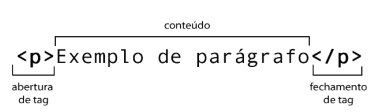
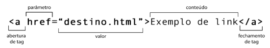
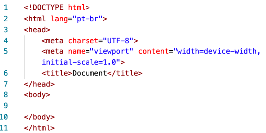
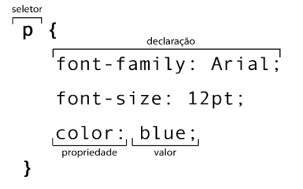

Ao começar estudar programação WEB é muito importante entender para que serve o trio de tecnologias que geralmente andam juntos no desenvolvimento de um site: HTML, CSS e JavaScript.
A Linguagem de Marcação Hipertexto, ou abreviada para o inglês como HTML, nada mais é do que a tecnologia responsável para fazer a criação do seu documento WEB, nela, fazemos marcações que comandam o que será exibido no documento.
As marcações, demoninadas geralmente como "tags" é um conjunto de letras ou palavras entre sinais de colchete angular ( < > ) representado da seguinte maneira:
A maioria das tags possuem uma abertura e fechamento, sendo representado pela presença de uma barra ( ⁄ ) no final, com a imagem acima, podemos ver a criação de um paragráfo simples feito através da tag <p>
Além disso, as tags também podem ter atributos e valores, que vão configurar seu comportamento: 
Na imagem, podemos notar a função de um parâmetro com um valor agregado. Uma mesma tag pode ter vários parâmetros, cada um com seu valor. Entretanto, algumas tags não possuem a necessidade de conteúdo interno e por isso não possuem fechamento.
Dessa forma, podemos concluir com a estrutura básica de um DOCUMENTO HTML que sempre ao criar um novo devemos sempre escrever a estrutura básica no seguinte formato: 
As linhas 7, 10 e 11 é o fechamento das respectivas tags, porém, ao observar a imagem, notamos que na linha 6 existe um também, desta forma podemos caracterizar o documento de acordo com nossa preferência deixando o conteúdo continuo, representado acima ou entre a tag, da seguinte maneira:
<title>
Document
<⁄title>
Por sua vez, temos as Folhas de Estilos em Cascata, ou CSS, que são usadas para fazer a configuração de um seletor gerando um resultado visual dos elementos HTML. 
O uso das chaves delimita todas as declarações relativas ao seletor. No seletor apresentado anteriormente, serão feitas três configurações que vão mudar o visual dos elementos de parágrafo:
Assim como a grande maioria das tags possuem fechamento, os seletores também, sendo assim, ao final de cada declaração, temos que colocar ponto-e-vírgula ( ; ) para indicar que ela se encerrou. Porém diferentemente de algumas tags que não precisam ter contéudo após sua abertura, Todas as propriedades devem ter seu valor, e eles devem ser separados por dois pontos ( : ).
Com tudo, ainda sim é "errado" dizer que programa em HTML e CSS porque essas tecnologias não são efetivamente uma linguagem de programação, o uso da HTML é fundamentada apenas nas marcações e a CSS, nos seletores, propriedade e valores, como vimos acima, o fato é que para ser considerado devidamente uma LINGUAGEM DE PROGRAMAÇÃO é necessário que haja estrutua especializadas que dependem do uso de variáveis simples e compostas, condições, laços e objetos como é o caso do JAVASCRIPT.
Essa é uma das linguagens de programação que é capaz de realizar a animação e interação do usuário com o site.